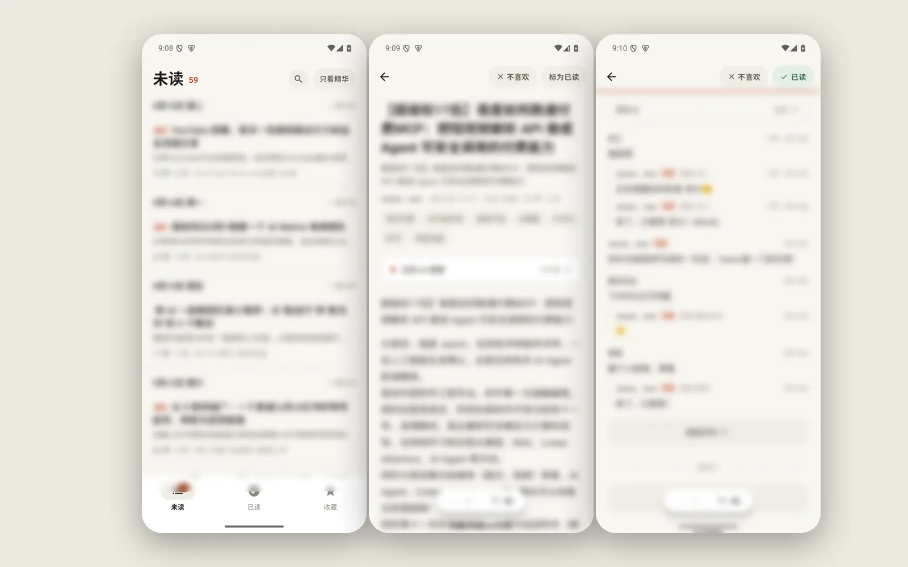
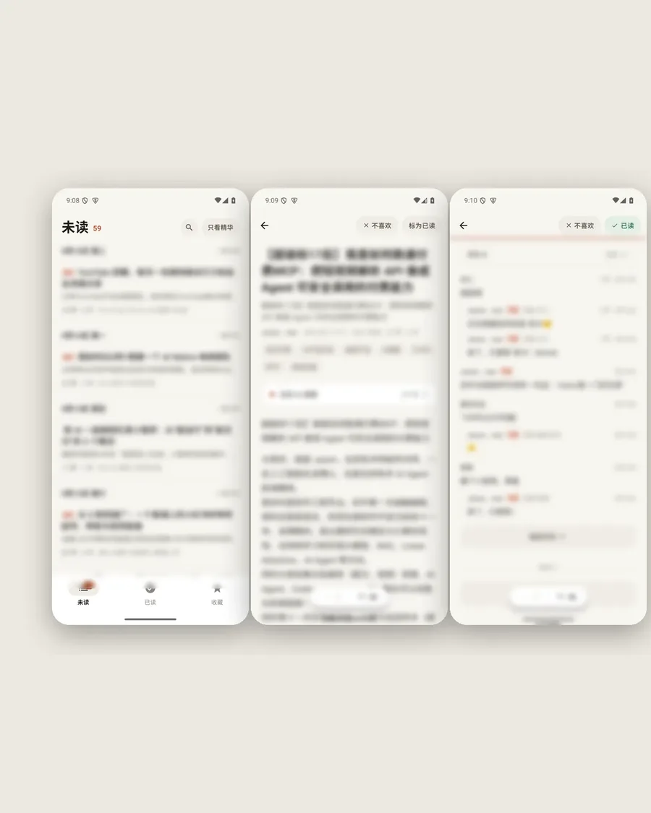

日读

信息过载时代，想做一个"只看精华"的阅读器
信息过载是个老问题了——关注了一堆社区和博客，每天刷下来时间花了不少，真正有价值的内容没多少。用过各种 RSS 阅读器，也试过 Reeder、Inoreader 之类的产品，但总觉得还是不够"聪明"。
于是干脆自己做了一个"日读"App——不是给别人做的产品，就是给自己用的工具。做着做着功能越来越全，干脆就当成一个完整项目来做了。
怎么让信息流"越用越懂你"
传统 RSS 阅读器的问题是"你订阅什么就给你什么"，不会帮你筛选。但实际上每个博客/社区的内容质量都是参差不齐的，有好文章也有水帖。
挑战在于：怎么用 AI 从海量内容中筛选出我真正感兴趣的，而且随着我的使用越来越准？另外，不能只是"推荐"，还要让我能方便地反馈喜好，形成闭环。
AI 双层过滤 + Tinder 式交互
后端每天定时从 Hacker News、Reddit 几个子版块、V2EX、以及一些独立博客的 RSS 源抓取新内容。先用 AI 做一轮初筛，把广告、水文、重复内容过滤掉。
然后用另一个模型给剩下的内容打分，按"我可能感兴趣的程度"排序。分数高的标为"精华"，会出现在首页顶部。每篇内容还会生成一段两三句话的摘要，不用点进去就能知道大概讲了什么。
App 交互借鉴了 Tinder——右滑收藏，左滑"不喜欢"。不喜欢的内容会反馈给后端，用来调整推荐算法。用的时间越长，推荐越准。
还有个"每日简报"功能，每天早上 8 点推送一封邮件（或 App 通知），里面是昨天最值得看的 5 篇内容，每篇一段摘要。花 5 分钟就能了解昨天发生了什么。
每天节省 1 小时刷信息的时间
用了几个月下来，最大的感受是"省时间"——以前每天早上刷各种社区要花将近 1 小时，现在打开日读看 10 分钟精华就够了。质量反而更高，不会漏掉真正重要的内容。
推荐准确率也在稳步提升。刚开始的时候大概有一半是我不感兴趣的，现在 80% 以上的内容我都会认真看完。左滑用得越多，推荐越准。
目前就我自己在用，还没有上线的计划。等打磨得更成熟了，说不定会考虑放出来给大家试试。
